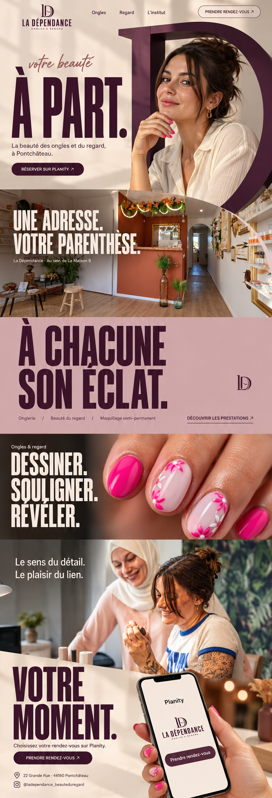
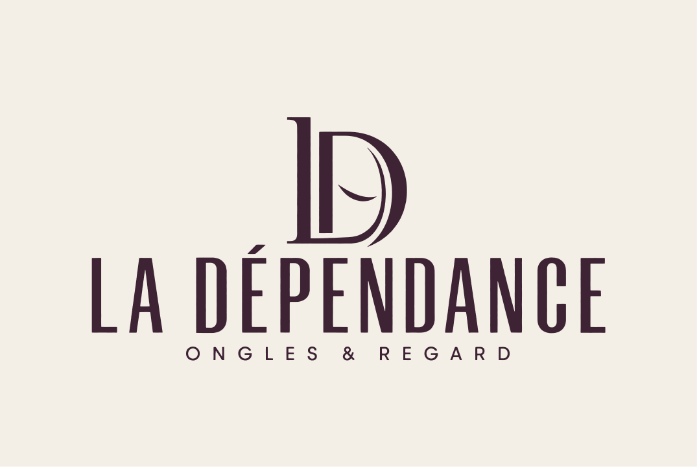
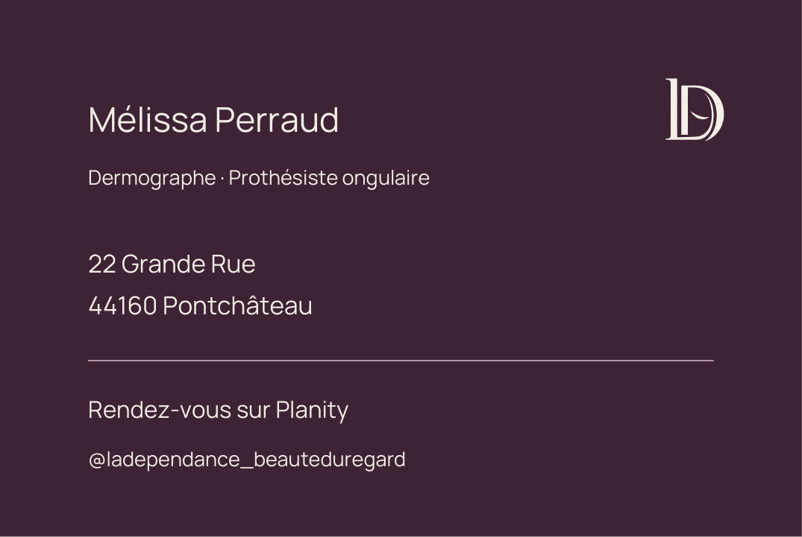
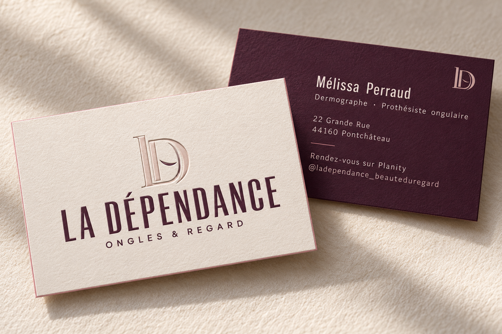

votre beauté
À PART.
O monograma como passagem, a fotografia como ambiente e a tipografia como presença. Este kit mantém a direção selecionada, com seis cenas, uma única pausa de cor sólida e reserva no Planity.
#3D2435
#F5EFE7
#D4B4BB
#9E6874
A imagem ao lado é o estudo visual aprovado, não uma captura da implementação. A revisão interativa do site em navegador não foi possível neste ambiente. Arquivos e estrutura foram verificados; o cartão foi renderizado e revisado.

Seis cenas, conectadas.
| Cena | Direção | Arquivo |
|---|---|---|
| À PART. | Retrato/moldura D, fundo fotográfico e título editável | Campanha em camadas |
| Une adresse. | Espaço real, sem refazer a arquitetura | Interior original + exportação web |
| Son éclat. | Único fundo sólido, rosa mineral | HTML/CSS e monograma SVG |
| Dessiner. | Manicure fúcsia real em grande escala | Foto original + exportação web |
| Le lien. | Foto real de trabalho e equipe | Foto original, enquadramento adaptado |
| Votre moment. | Telefone ilustrativo e link real de reserva | Campanha + texto HTML |
A marca, pronta para uso.

PNG transparente aprovado e SVGs com contornos vetoriais acompanham o pacote. O monograma tem versões independentes para aplicações pequenas. A conversão para caminhos preserva o desenho; não há bitmap incorporado na logo SVG.
Tipografia
Anton conserva a força condensada do conceito. Manrope organiza a leitura. Caveat aparece apenas no acento manuscrito do hero.
Aplicação
Não esticar a marca, alterar o monograma ou trocar a cor por laranja da referência. Fotografias reais mantêm suas cores, mesmo quando diferentes da interface.
Cartão frente e verso.




Corte 85 × 55 mm; arquivo com 3 mm de fundo perdido. PDF RGB de duas páginas, TrimBox e fontes incorporadas. O relevo seco é uma intenção do mockup; não foi criado um clichê de relevo nem certificado perfil CMYK/PDF/X de uma gráfica.

Movimento sem vídeo.
O conjunto D/retrato permanece durante a passagem do hero para a fotografia do local. A máscara cresce enquanto o primeiro plano se desloca para fora. O movimento é 2.5D, controlado por scroll; a leitura e a reserva continuam disponíveis sem ele.
Abertura
1,25 s de entrada discreta; sem tela de espera. O usuário pode rolar ou reservar a qualquer momento.
Passagem
Títulos saem entre 25% e 73% do progresso. A abertura D revela o interior entre 48% e 100%.
Controle
Movimento reduzido do sistema, economia de dados e botão de pausa mostram uma versão estática completa.
Roteiro
Parâmetros em motion/timeline.json. As instruções estão no roteiro do modelo 3. Nenhum vídeo foi gerado ou incluído.
Originais, edição e revisão.
As oito capturas fornecidas estão intactas. O site usa exportações WebP de alta qualidade, sem refazer nail art, pele, pessoas ou ambiente. As imagens geradas de campanha e os prompts ficam em pastas próprias.
Editar
Texto e estrutura em site/index.html, categorias em site/content.js, visual em styles.css e movimento em app.js. Os dados do cartão ficam em business-card/card-data.json.
Conferir
O serviço de prévia estava indisponível. Revisar enquadramentos, contraste, teclado e fluxos no navegador antes da publicação. Roteiro de revisão ↗